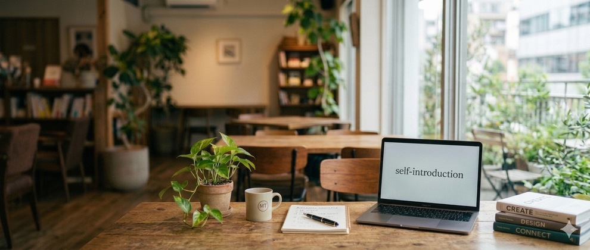
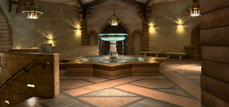

小野寺 悠斗 (おのでら はると)と申します。
なかなか珍しい当て字なのでよく間違われるのですが、
小野寺でも悠斗でも呼びやすい方で呼んでみてください

趣味は読書にゲームとかなり地味なので紹介することが短いのですが、最近steam で積んでいたソロゲーをフルコンプして今かなり満足感が高いです。
私はかなりインドアな性格なのですが実は、アウトドアな趣味兼特技があります。 それがウィンタースポーツです実は三歳の頃から親に連れられ冬になると福島に行っていて、 冬の遊びには自信があります結構自信があります。